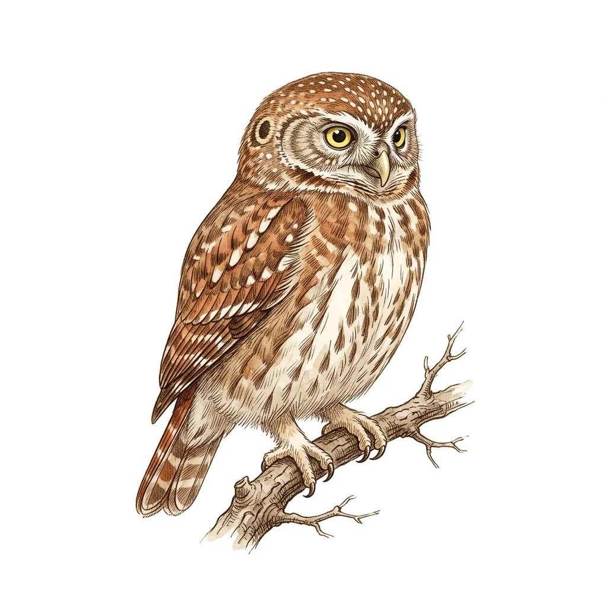

IA Aplicada · Atividade 9
O juiz em inglês
Juízes de segurança de LLM em portuguêsCristhian Kapelinski
Quinta entrega · 25/10/2026

Atividade 9 · A pendência
A A5 deixou uma pendência: a coluna do juiz no dataset parecia invertida
02Atividade 9 · O teste
Rodei o juiz e comparei
Llama Guard 3, 16 bits, nos 439 pares
03Atividade 9 · O resultado
Meu escore contra a coluna publicada:
436 de 439
pares com o mesmo veredito
a coluna é p(unsafe): não há inversão
04Atividade 9 · O acerto
Acerto do juiz contra o humano, nos 439:
7%
29 de 439 pares
05
Atividade 9 · O filtro do dataset
O dataset só guarda pares em que no máximo 1 juiz acertou
Schwinn et al., 2026, seção 4.5: JudgeStressTest
06Atividade 9 · O viés da escolha
Escolhidos onde o juiz erra, os 439 não medem o efeito da língua
07Atividade 9 · A nova base
Nova base: os 6.560 pares do CoinflipForSafety, sem filtro, já traduzidos na A8
08Atividade 9 · A linha de base
Linha de base em inglês
| Medida | Pares | Taxa |
|---|---|---|
| Acurácia | 4.776 de 6.560 | 73% |
| Falso positivo | 818 de 1.386 | 59% |
| Falso negativo | 966 de 5.174 | 19% |
resposta nociva que o juiz libera como segura
09Atividade 9 · Próximo passo
Próximo: o mesmo juiz, nos mesmos pares, em português
10Obrigado!
Perguntas são bem-vindas
Cristhian Kapelinski
cristhianavila.aluno@unipampa.edu.br